Sparkle Valley · world redesign · draft 8 Oct (AEST)
Valley layout concepts
How the villages, towns, houses, kiosks and roads will be laid out so a 3–8 year old always knows where they are and where to go next. Below: what the valley looks like now, the chosen combined design, the three concepts it comes from, and one set of rules for every village and road.
The valley now
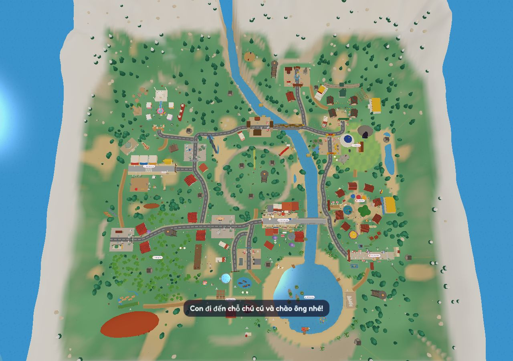
From the sky today (r47): a 400 × 400 m valley, the river down the middle, Ông Cú's plateau in the centre.
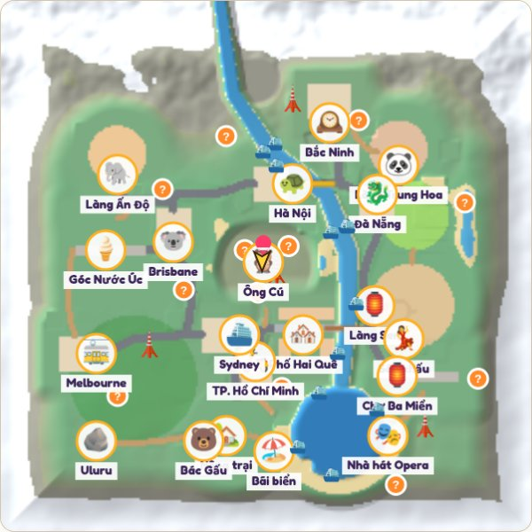
The in-game map today: names pile up in the middle and on the east bank.
Countries are mixed. Sydney sits next to TP. Hồ Chí Minh, Brisbane next to Hà Nội, and the Sydney Opera House is far away at the lake in the south-east. Children can't build a picture of "Vietnam" and "Australia".
Crowded labels. Sydney, Phố Hai Quê and TP. HCM overlap; so do Làng Sen, Chợ Ba Miền, Đà Nẵng and Làng Trung Hoa.
Roads are separate pieces. There is no loop. Many places are reached only across grass, so "follow the road" doesn't work.
Home is far from the start. A child starts at Ông Cú in the middle, but Sunny Farm is near the bottom edge.
Uneven space. The east bank is packed; the north-west and south-west are big empty forest.
The plateau blocks the middle. The round hill makes every trip across the valley go around it.
Chosen (owner, 8 Oct)Concept D = A + B + C
Thung Lũng Hai Quê: All three together, with more water and mountains
The two banks from A, the ring road and coloured roads from B, and the numbered first-week stops from C. Added: more rivers and lakes, real mountain ranges with passes, and the China and India towns in the northern mountains.
Concept D. Coloured roads: red Vietnam, orange Australia, purple to the mountains. Gold and teal bars: bridge landmarks over real rivers. Pink bars: the two bridges to the home island. Dashed white: the river raft and ferries. Pink dashed boxes: the two Memory Villages and the spare plots. White circles 1–8: the first-week stops.
From each concept
A, two banks: Vietnam east, Australia west, each north to south like the real country; home and Ông Cú on the island in the middle.
B, lotus hub: a ring road around the home island; every road painted in its region's colour (red Vietnam, orange Australia, purple to the mountains, blue along the coast).
C, journey stops: numbered first-week stops, one new place each day: 1 home, 2 Làng Sen, 3 Chợ Ba Miền, 4 Sydney, 5 Hà Nội, 6 Brisbane, 7 China and India, 8 Bà Rịa–Vũng Tàu.
New water and land
Rivers: the main river; Sông Hồng, Sông Hàn, the Hội An canal and Sông Sài Gòn on the Vietnam side; the Brisbane River, the Yarra and the Murray on the Australian side; the Mekong delta in the south-east.
Lakes: Hồ Gươm in Hà Nội, Sydney Harbour, Hồ Gương (Mirror Lake) by Làng Sen, and a billabong near Uluru. The southern coast has Bondi beach and the Mekong delta.
Mountains: snowy peaks across the north, the Trường Sơn range along the Vietnam side with the Hải Vân pass, and the Great Dividing Range on the Australian side, with the outback and Uluru beyond.
China and India towns sit high in the northern mountains, joined by the purple mountain road, as the neighbours across the hills.
Rivers, bridges and boats
Every bridge landmark crosses real water: Cầu Rồng (Dragon Bridge) over Sông Hàn in Đà Nẵng, Chùa Cầu over the Hội An canal, Long Biên over Sông Hồng in Hà Nội, the Harbour Bridge in Sydney, the Story Bridge over the Brisbane River, and Princes Bridge over the Yarra in Melbourne.
Two bridges join the home island to the two banks; Phố Hai Quê sits on the south side of the island.
Boats that connect: the river raft runs the length of the main river with a stop at every bridge; a Sydney Harbour ferry; a boat from TP. HCM down Sông Sài Gòn to Vũng Tàu; a coast boat past the Mekong delta to Vũng Tàu. Every pier joins a road, and a check rides every boat end to end.
Bà Rịa–Vũng Tàu
A coastal village just south-east of TP. HCM, reached by the red road and by boat.
Vũng Tàu Lighthouse on the hill, Bạch Dinh (the White Villa), Bãi Sau beach, fishing boats, and bánh khọt stalls. The lighthouse and Bạch Dinh move here; Nhà Tròn stays on Phố Hai Quê.
First-week stop 8.
Room for family memories (owner, 8 Oct)
Two Memory Villages (Làng Kỷ Niệm), one on each bank beside the home island, about 20 plots each, plus 2–3 spare plots in every town and village: about 60 plots in all.
Three plot sizes: small (a stall, a shrine, a bench), house, and big (a school, a shop, a café). Every plot is already flat and joined to a road.
Until a plot is used it is a little garden (flowers, a bench, a tree); a building simply replaces the garden.
Every player sees the family buildings. To keep children safe, a building shows only a family nickname, never photos of children, full names or real addresses, and goes up only after the owner places it in Studio.
Rules that stay
Roads no steeper than 8 % (dirt 12 %); passes wind gently through the mountains.
Flat villages; every village uses the village pattern below.
The valley grows by about a fifth (about 480 m) to make room for the extra water, mountains and the 60 plots, as long as the speed checks still pass on phones.
Concept A
Hai Bờ Sông: Two banks, two homelands
The river becomes the story of the family: Vietnam on the east bank, Australia on the west bank, each laid out top to bottom like the real country. Home and Ông Cú sit on an island in the middle, joined to both banks by bridges, so every trip starts from home. China and India are "neighbours over the mountains" in the north.
Concept A. Red: Vietnam (north at the top). Orange/teal: Australia. Purple: neighbours over the mountains. Pink: home island. Dashed white: the raft line.
Why it works for children
One sentence explains the whole map: "Vietnam this side, Australia that side, home in the middle."
Real geography for free: Hà Nội is north of Đà Nẵng, which is north of TP. HCM; Brisbane north of Sydney, north of Melbourne; Uluru far inland.
Two roads you can't get lost on: one long street down each bank, joined by three bridges (north, middle, south).
Phố Hai Quê sits on the main bridge, the place where both homelands meet, like the family.
Home is the centre of every trip, which suits the first-day guide and the new homes.
What moves
Sydney, Brisbane, Melbourne and the Opera House move to the west bank; Đà Nẵng, Hội An and Chợ Ba Miền line up on the east bank.
Sunny Farm and Ông Cú move onto the island; the plateau becomes the mountains in the north.
Buildings, villagers and games keep their designs; only where they stand changes.
Concept B
Bông Sen: The lotus hub
Home and Ông Cú in a round square in the middle, a ring road around it, and six "petals", each a zone with its own colour. Every petal is about a minute's walk from home, and each spoke road is painted in its petal's colour.
Concept B. Six coloured petals around one ring road. Each spoke road matches its petal's colour.
Strengths
Shortest trips: nothing is more than one petal away from home.
Colours teach direction before reading: "take the red road to Miền Bắc".
Fits the Simple screen perfectly: six big petal buttons.
Weaknesses
The river has to bend around the ring, so the raft ride gets shorter.
Less real geography than Concept A.
Feels more like a theme park than a valley.
Concept C
Con Đường Hành Trình: The journey road
One long scenic road snakes through the valley like a board game, with numbered stops in story order. The first week's unlocks follow the stops: day 1 home and Làng Sen, day 2 the market, and so on. Shortcuts and a little tram open as the child explores.
Concept C. One road, eight stops in story order. Dashed: shortcuts that open later.
Strengths
Impossible to get lost: there is only one road, and the next stop is always "the next number".
Matches the starter quests and the "new place each day" plan exactly.
Great for under-5s: same order on the Simple screen.
Weaknesses
Long trips for older children until the shortcuts open.
Fixed order is less open-world for 6–8 year olds.
Inside every village: one simple pattern
Whichever concept wins, every village and town follows the same grammar, so a child who learns one place knows them all: the host is always in the square, food stalls always line the market street, houses are always behind.
The village pattern, drawn for a Vietnamese village. An Australian town uses the same pattern: gate → main street → park → shops → houses.
① Gate on the roadEvery village has one gate where the main road arrives, with its name and picture. You always know when you've arrived.
② Market streetKiosks and stalls stand in one row on one side of the main street, all facing it. No stall alone in a field.
③ The squareThe game host, the banyan or big tree, the well and the festival table always stand here. "Games are in the square."
④ Stage at the endThe singer's stage and the hội làng events close the view at the end of the street, so you see it from the gate.
⑤ Houses behindHouses sit on quiet back lanes with gardens, away from the busy street, so the main street stays clear.
⑥⑦ Nature outsidePond, fields and animals around the edge, with a footpath loop for walking and surprises.
How roads, paths and rivers will look
Today every road is the same grey highway, village paths fade into bare sand, and every river is the same flat blue. In the new valley each kind of road and water has its own look, and the Vietnam and Australia sides look different, so a child can tell where they are just by the ground under their feet.
Today in the game
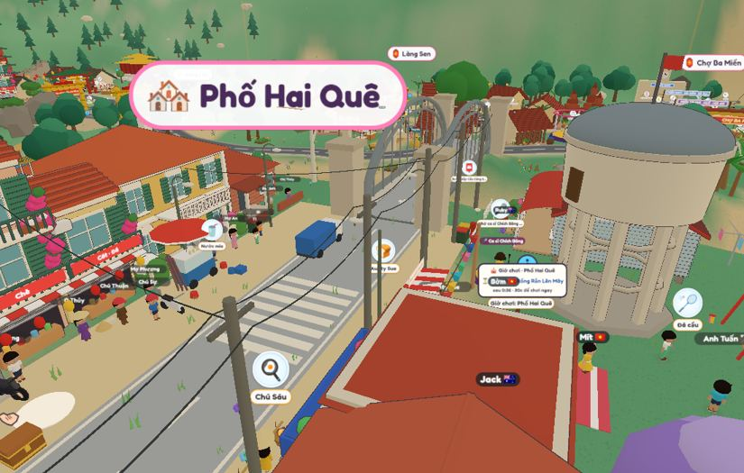
Phố Hai Quê: grey road, white dashes.
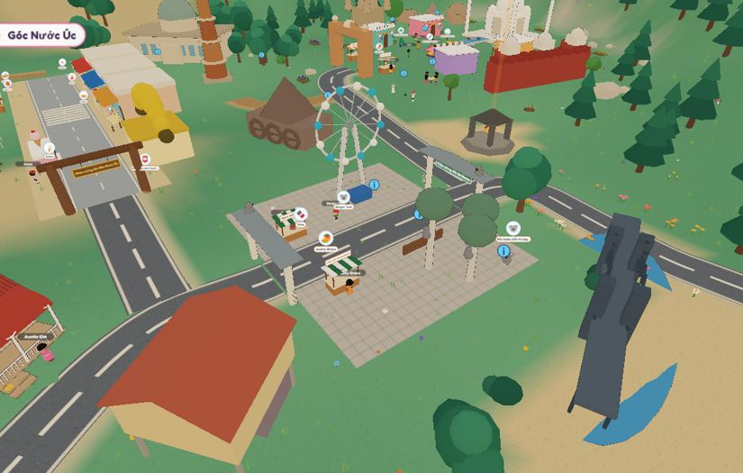
Aussie Corner: the same grey road.
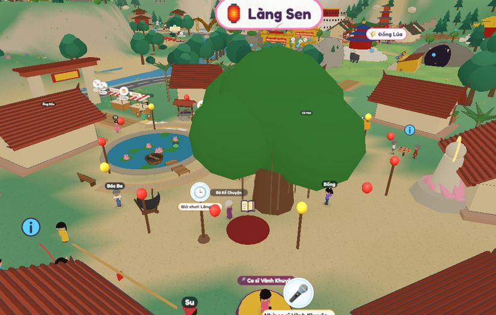
Làng Sen: paths fade into bare sand.
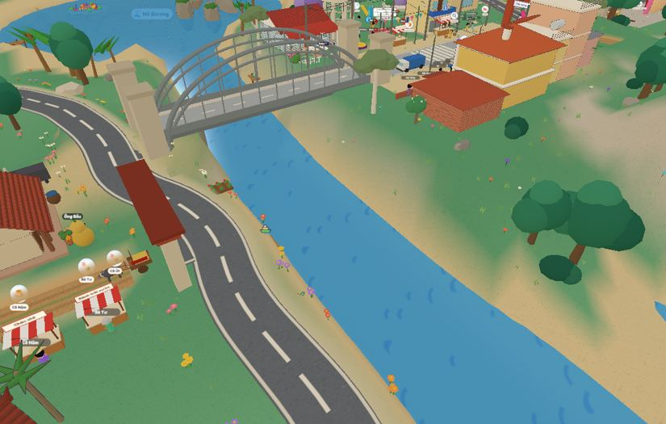
River: flat blue, smooth sand banks.
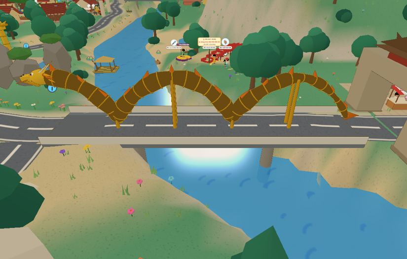
Cầu Rồng: works, but the river under it is plain.
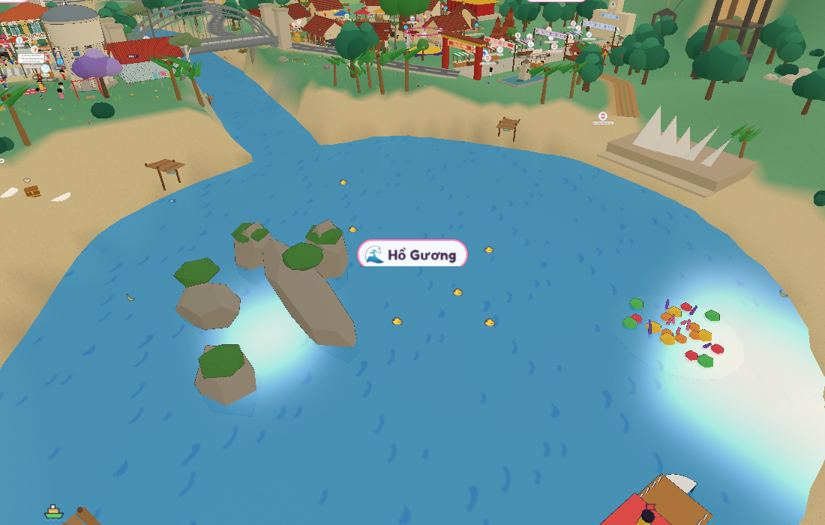
Hồ Gương: white glare spots on the water.
The new look, drawn from above
Vietnam main road (6.4 m). Grey asphalt, yellow centre dashes, white edge lines for motorbikes, a stone kerb, red lamp posts and bougainvillea along the verge.Australia main road (6.4 m). Darker asphalt, white centre dashes, concrete footpaths with gutters, zebra crossings near shops, gum trees and orange lamp posts.Village street, Vietnam side (4 m). Red brick paving, lanterns strung across, potted plants by the doors. Australian towns use pale paving stones with benches and bins.Dirt path (1.6 m). Warm red earth, like Bà Rịa's đất đỏ, with two darker wheel tracks, grass down the middle, edging stones and wildflowers. Near Uluru it turns orange outback red; in forests, bark chips.Paddy dike (bờ ruộng). A narrow raised earth path between flooded rice fields with water glinting on both sides; buffalo and egrets nearby.River. Sandy banks, shallow light water at the edges and deeper blue in the middle, gentle moving ripples, reeds and purple water hyacinth (lục bình), and the bamboo raft. No more glare spots.Every river looks like the real one. A small lesson for free: "Sông Hồng means Red River, and look, it is red!"Coast at Vũng Tàu and Bondi. Pale sand, a white foam line that moves with the waves, round basket boats (thúng chai) and a fishing boat.
Phones stay fastMoving water and ripples are drawn by one shared, cheap effect; patterns like bricks and wheel tracks are painted into a few shared pictures, so the draw-call budget stays the same.
Hard rules stayRoads ≤ 8 % and dirt ≤ 12 %; smooth curves; junctions 60–120°; walking stays smooth on every surface.
Sounds match the groundFootsteps sound different on asphalt, brick, dirt and sand; rivers and the sea have their own soft sound.
Animals that roam and can be ridden
Each country's animals live freely in their own landscape: buffalo in the rice fields, horses in the northern mountains, kangaroos in the outback. They wander, graze, drink at the river and sleep at night. A child can walk up, feed them and, for the gentle ones, tap Cưỡi (Ride). Each one moves in its own way. Today the game has 22 animal models but only the water buffalo can be ridden.
Animal
Where it roams
Ride?
How it feels
Vietnam
Trâu (water buffalo)
Rice fields around Làng Sen
Yes (already)
Slow and steady, walks through paddy water
Ngựa (Hmong horse)
Northern mountains near Hà Nội
Yes
Fast trot on mountain paths
Voi (elephant)
Tây Nguyên forest by the Trường Sơn range
Yes
Tall and swaying, wades across shallow rivers, sprays water
Bò kéo xe (ox cart)
Village roads
Yes, sit in the cart
A slow tour between villages
Đàn vịt (duck flock)
Paddies and canals
No
Herd them with a bamboo pole, they follow in a line
Sếu đầu đỏ (red-crowned crane)
Mekong wetlands
No
Dances when you dance; a rare visitor
Voọc chà vá (red-shanked douc)
Sơn Trà trees near Đà Nẵng
No
Swings in trees, waves back
Rùa Hồ Gươm (turtle)
Hồ Gươm
No
Pops up to hear the legend of the returned sword
Cá heo (dolphin)
Sea off Vũng Tàu
Swim beside
Jumps beside the boat
Australia
Kangaroo
Outback meadows
Yes
Big bouncy hops, jumps higher than walking
Emu
Open plains
Yes
Fastest runner; emu races
Camel
Desert near Uluru
Yes
Rocking sway, crosses sand
Brumby (wild horse)
Great Dividing Range
Yes
Gallops across hills
Sea turtle
Reef and Bondi
Yes, swimming
Glides underwater past fish
Koala
Gum trees
No
Rides on your shoulder for a while
Wombat, platypus
Creeks and burrows
No
Follow them home; platypus dives and pops up
Kookaburra, cockatoo
Trees everywhere
No
Laughs, perches on your arm
China, India and magic
Panda
Bamboo by Làng Trung Hoa
No
Sits and munches bamboo with you
Decorated elephant
Làng Ấn Độ
Yes
Festival ride with flowers and bells (Diwali)
Peacock
Làng Ấn Độ gardens
No
Opens its tail when you clap
Your dragon (rồng)
With you
Yes, when grown
The baby dragon companion grows up and flies you across the valley: a big long-term goal
Unicorn
Fairy glade (secret)
Yes
Rare surprise ride with a rainbow trail
Friends firstFeed or brush an animal a few times and it becomes your friend: it comes when you call and you can ride it. That builds a bond over days.
Gentle and kindAnimals are never hurt, never scary, and never chase. No wild dangerous animals (no crocodiles or tigers near paths).
They live their dayGraze in the morning, drink at the river at noon, rest in the shade, sleep at night; babies follow their mothers.
Learn as you rideA short spoken fact each ride in both languages: "Kangaroos carry their babies in a pouch."
Together onlineFriends see each other riding; two children can share an ox cart or elephant.
Phones stay fastOnly animals near the child move; far herds stand still and are drawn simply.
Redesigning houses, buildings, characters, animals and trees
The one idea behind every model: a storybook toy world. Everything looks like a soft, chunky wooden or clay toy you'd want to pick up, with rounded edges, a warm colour that is lighter on top and darker underneath, and one or two details that say exactly where it comes from. Vietnam, Australia, China and India each get their own shapes and colours, so a child knows where they are at a glance.
Fixed now: the bicycle
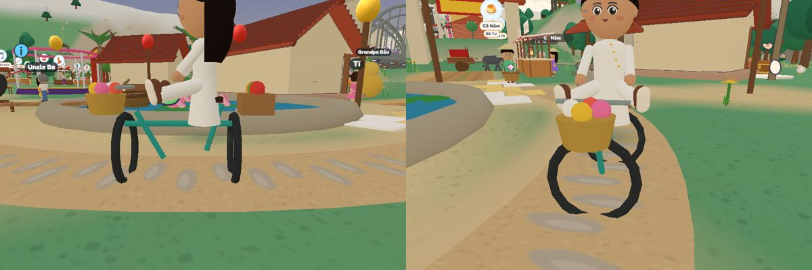
Before: the wheels were turned sideways (thin lines from the side, flat rings from the front), the frame didn't reach the wheels, and the wheels never turned.
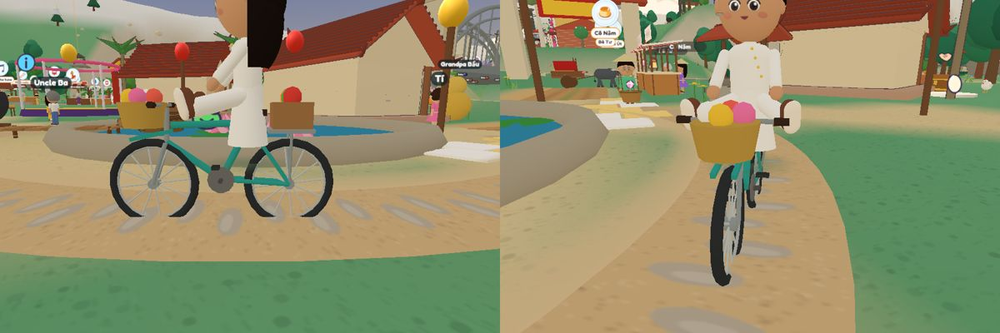
After (on the round-r branch, not pushed): upright wheels with rims, hubs and spokes that roll as she rides; frame, fork, pedals, saddle, rack and baskets all joined.
Today in the game
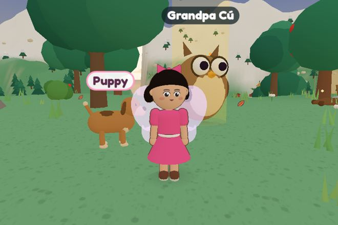
Characters: a flat face sticker on a round head, stiff arms and legs.
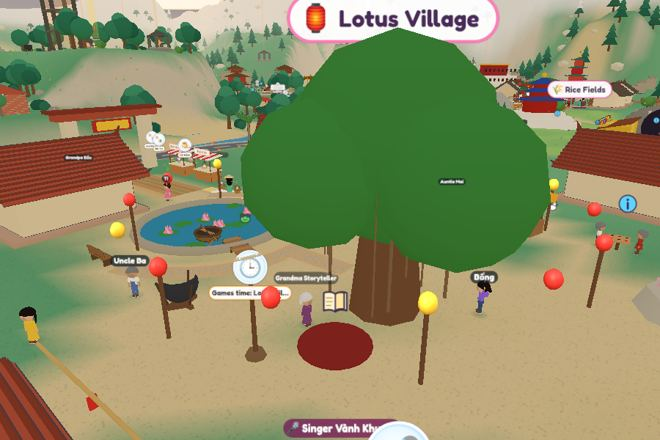
Village houses: plain beige boxes with one red roof each, all alike.
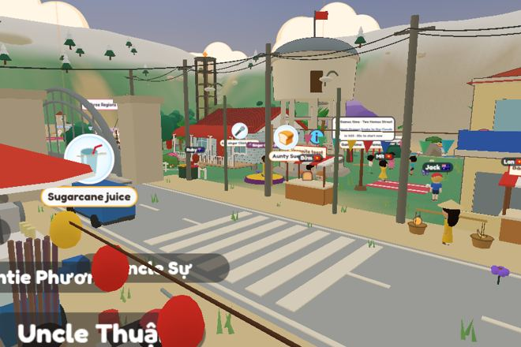
Town: lots going on, but the buildings are simple blocks.
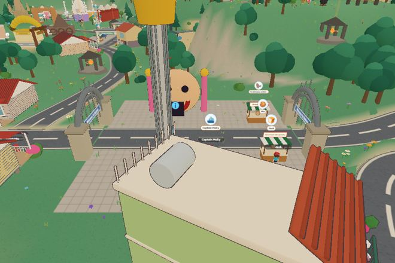
Sydney: big grey squares, few buildings that feel Australian.
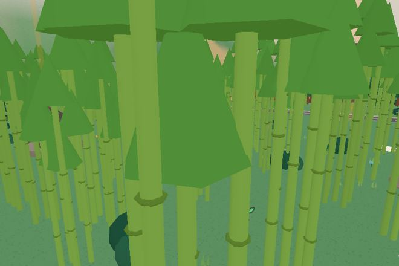
Trees: one round blob per tree; bamboo looks like green spikes.
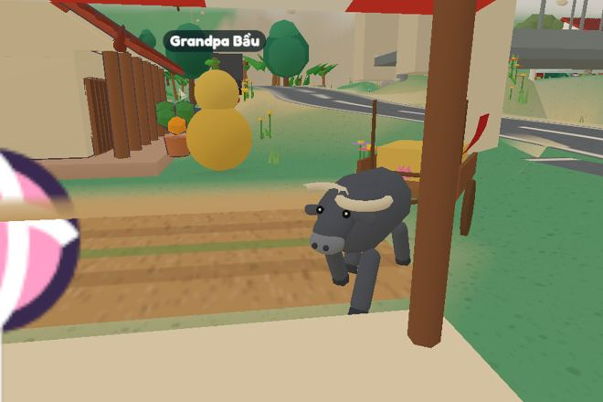
Animals: recognisable, but blocky and expressionless.
Houses
Every house has a shape that belongs to its place: curved tile roofs and a front yard with a water jar in Vietnamese villages; narrow, colourful tube houses with balconies, awnings and tangled wires in towns; yellow Hội An shophouses with lanterns; Queenslanders on stilts with verandahs and a jacaranda; red-brick Sydney bungalows; Melbourne terraces with iron lace. Doors are big and clear, and each house's front faces its road.
Characters
Bigger, rounder heads with real hair shapes (fringes, buns, ponytails, curls), shiny eyes, eyebrows and rosy cheeks; the face shows feelings (happy, surprised, sleepy) and the mouth moves when they talk. Bodies are softer, with bendy arms and simple clothes patterns. Villagers wear what their job and place would: nón lá, áo bà ba, áo dài, school uniforms, an Akubra hat, a chef's hat. Children's own characters use the same style and the new shop clothes.
Animals
Animals become soft plush toys: round bodies, big friendly eyes with a shine, short legs, and faces that show happy, sleepy (zzz) or hungry. Babies follow their mothers (a joey in the pouch, a calf beside the buffalo), and small friends ride along (an egret on the buffalo). Every animal has its own walk, sound and idle moves.
Trees and plants
Trees grow in clusters of soft rounded clumps, lighter on top and darker underneath, and sway gently in the wind. Each region has its own: cây đa (banyan) with hanging roots, feathery bamboo, banana and coconut palms, the red flame tree (phượng vĩ) in summer; gum trees, jacaranda and wattle in Australia; willow and plum blossom in China. Trees flower with the real season and the festivals: hoa mai and hoa đào at Tết, jacaranda in October and November.
Buildings and landmarks
Chunky and recognisableLandmarks keep their real shape but are a little shorter and rounder, with their famous features made bigger: the Opera House sails, Chùa Một Cột's single pillar, Cầu Rồng's dragon head.
City blocks with lifeAustralian cities get shops with awnings, cafés with tables outside, a tram in Melbourne and a CityCat ferry in Brisbane, in place of big grey squares.
Insides to visitEvery building with a door can be entered: a simple cosy room with things to tap, using the same few shared furniture pieces.
Day and nightWindows glow warm at night, lanterns light up, and shop signs switch on.
Keeping phones fast
Same tricks as nowShapes stay simple and merged; colours live in the model, not in big pictures; trees and animals of one kind are drawn together in one go.
Less detail far awayClose up you see the spokes, faces and leaves; far away each thing turns into a simpler version.
One step at a timeThe redesign happens place by place along with the new map, and the speed check runs after each step.
Animals and trees, built in the game's own 3D
These are real 3D samples made with the game's own shading, not drawings: what children will see. The code is kept in the project (tools/art-proto) for building the real ones.
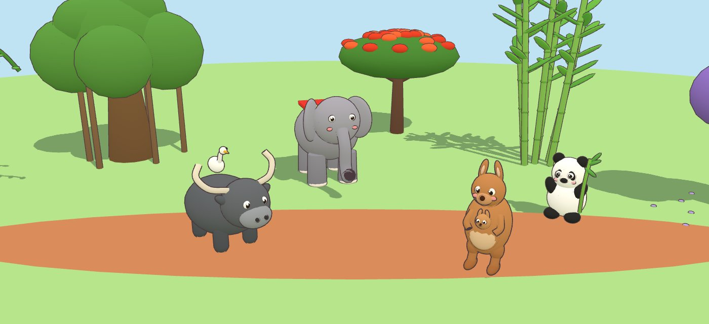
A corner of the valley: the buffalo with its egret friend, an elephant, a kangaroo with her joey, a panda with bamboo, under a banyan, a flame tree and a bamboo clump, beside a red-earth path.
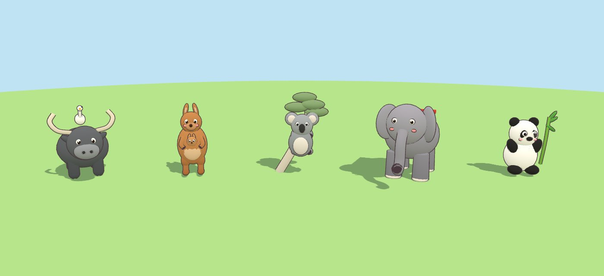
Buffalo and egret, kangaroo and joey, koala hugging a gum branch, elephant with a festival cloth, panda with bamboo: round plush shapes, shiny eyes, rosy cheeks, soft shading from light on top to darker underneath, and a thin outline.
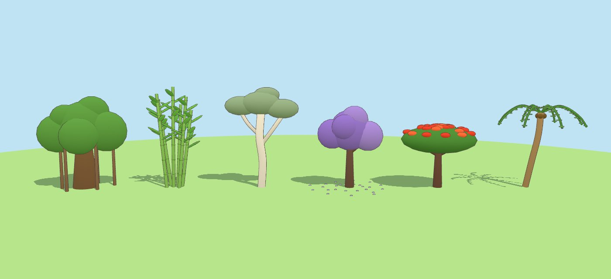
Cây đa with hanging roots, feathery bamboo with joints, a white gum tree, a jacaranda dropping purple petals, a flame tree (phượng vĩ) covered in red flowers, and a coconut palm with drooping leaves.
Done on the round-r branch: two players face to face, and self-wiring power poles
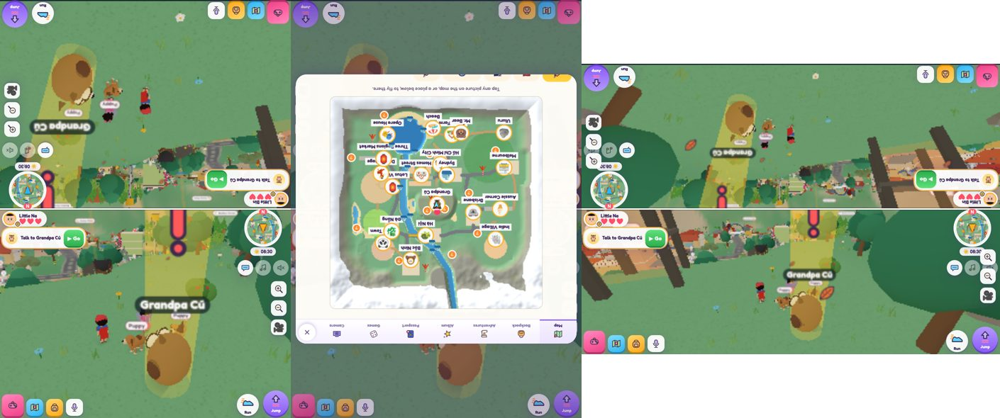
Two players on a tablet lying flat: the far half, its buttons and joystick are turned to face the child at the far end (tall and wide); a window that child opens (here the map) faces them too. Computers keep side by side. Grown-ups → Screen and world → "Two players on one device": Automatic, Face to face, Side by side.
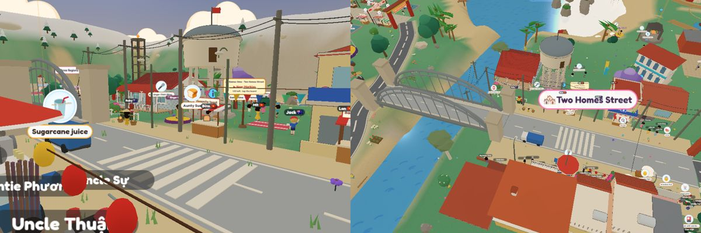
With the power-pole switch on: every pole, including any placed in Studio's map (new "Power pole"), is wired to its nearest neighbours by itself, crossarms facing their wires, and houses get a drop from the nearest pole. Off by default.
Stories and guides, redesigned
Today the fairy tales are one flat backdrop with look-alike characters standing in a row, the opening story is a still card, and the how-to guides are slides in a TV frame. The redesign: a living pop-up book. Every page is a little theatre of layered paper cut-outs that move with depth, characters who act, words that light up as they're read, and a moment on most pages where the child helps the story along.
Today
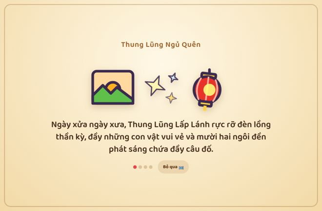
Opening story: three icons and a sentence.
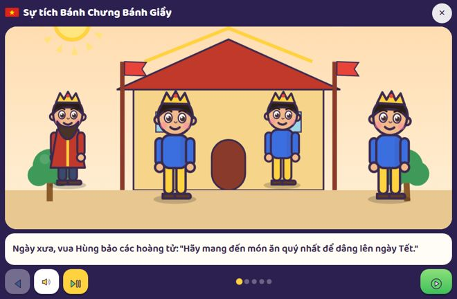
Bánh Chưng Bánh Giầy: the same palace for every page; the king's three sons are copies of each other.
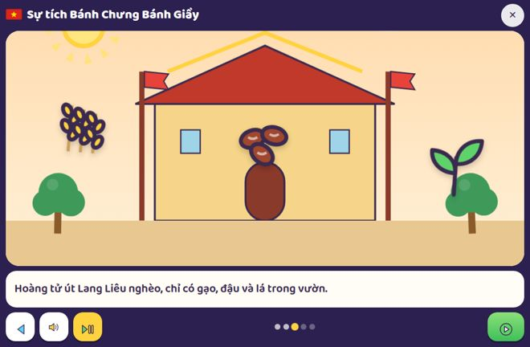
Lang Liêu's rice, beans and leaves float in the sky with nobody using them.
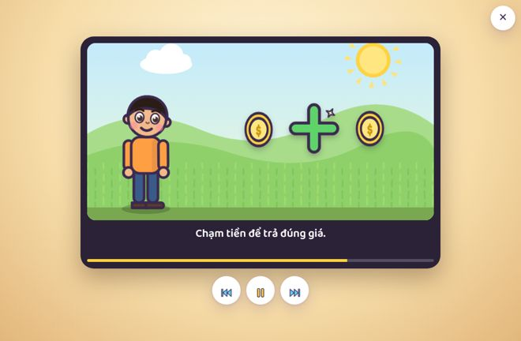
How to play: a boy, coins and a plus sign in a TV frame.
Animated sample of the redesigned Bánh Chưng Bánh Giầy page. The hills, the paddies and Lang Liêu move at different speeds as the camera drifts (depth like a pop-up book); he blinks, talks and wraps the square bánh chưng while rice grains fall in; each word lights up as the voice reads it; then a hand invites the child to tap the cake and tie the strings. The red-and-gold frame follows Đông Hồ folk prints.
What changes
Every page is a shotWide, medium or close-up, like a picture book or a cartoon: the camera drifts, pans to the next character, or zooms in on the important thing. No more everyone standing in a row.
Characters who actEach character is different (age, clothes, face) and acts the words: walks in, points, cries, laughs, bows. Mouths move with their lines; faces change with feelings.
Props that are usedRice falls into the pot, the cake is wrapped, the bamboo grows: objects are part of the action, not floating stickers.
Words light upEach word lights up as it is read (it helps early readers), big and clear. Tap a word to hear it; the other language can show underneath.
The child helpsEvery 2–3 pages: tie the bánh chưng, wake the sleeping turtle, choose which way the boat goes. Under-5s: anything they tap wiggles and makes a sound.
Three ways to read"Đọc cho con" (read to me, automatic), "Con tự đọc" (turn pages yourself), and "Bố mẹ đọc" (no voice, bigger words, for a grown-up reading aloud).
A book for each placeVietnamese tales in Đông Hồ print colours on warm paper; Australian stories in soft bush watercolours; Chinese tales with red paper-cut borders; Indian tales with rangoli borders.
A real endingA one-line lesson, a "what would you do?" question, and a keepsake sticker; the story then points to its place in the valley (bánh chưng at Tết, the turtle at Hồ Gươm).
The how-to guides
How to play: watch → the companion shows each move on the real game screen → "Tới lượt con!" (your turn), with the first move guided.
The opening story
The opening becomes a 30-second fly-over of the real 3D valley at dawn, narrated, while the world finishes loading behind it (so it also hides the wait): mist, Ông Cú lights a lantern, lanterns wake across the valley, the camera lands on the child's own home with their companion. It plays once, can be skipped, and can be watched again from the Pad.
Calm modeNo camera drift or zooms; gentle fades only; no flashing.
Light on phonesLayers are a few shared drawings moved with cheap transforms; the 38 tales reuse a library of sets, characters and props.
Family stories tooStories made in Studio use the same book, sets and characters, so they look as good as the built-in ones.
Name tags and the Pad map
Today: every villager's name, every ⓘ and every bubble shows at once, at every distance, so they pile up.New: only the few nearest people (at most 4) show a small name tag, fading with distance; a pink "!" marks who has something for you; ⓘ appears only when you're close. Tags never cover each other or a face.
New Pad map: a drawn picture of the new valley. Regions are lightly tinted in their colour; each place is a round picture badge with one clear name that never overlaps; zooming in shows town names and shops. It shows you, your friends, today's festival, your next first-week stop, and clouds over places you haven't been.
New Round R screens
All new screens share one frame: a big rounded card, a clear title with a drawn picture, large tap targets (at least 64 px for under-5s), a round ✕ that's always in reach, and nothing that needs reading to use.
Shop (tabs for hats, tops, shoes and back items, a big preview of your child, prices in game coins); home upgrade (level dots and the materials still needed); festival calendar (the next festival big with a countdown, today's times); What's new card (shown once, with "Go and see"); mystery box (one free a day for 5–8, opens with sparkles); family and friends rankings in four categories; the collectibles book with "?" for ones still to find; and the treasure map that fills in piece by piece.
Vehicles and street things
Vehicles in the same toy style, with wheels that roll and everyone in a helmet: the Vietnamese family motorbike, a xích lô, a yellow-green bus, a little car, and the green-and-gold Melbourne tram. On the water: the bamboo raft, the ferry and round thúng chai basket boats. Vehicles keep to their roads, go slowly and always stop for a child.Street things: xe đẩy and gánh stalls with real food, striped kiosks, red lantern lamps on the Vietnamese side and simple street lamps on the Australian side, picture signposts with arrows in the region colours and dots for distance, benches, bins (red lid for rubbish, yellow for recycling) and the Australian red letterbox. The power poles are switched off for now (see below).
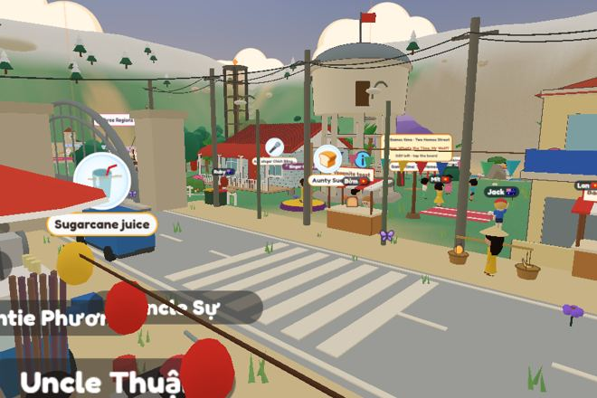
Studio switch on: power poles and wires.
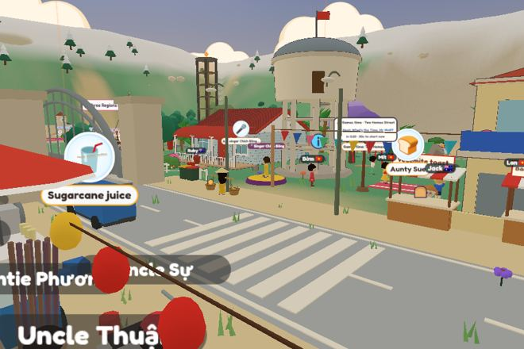
Now (default, on the round-r branch): no power poles or wires; the street lamps stay. Studio → Defaults → "Things in the valley" switches them back on.
Sky, nature, the companion and pets
The sky follows the real time of day: a soft dawn, a bright day with puffy clouds, a pink-and-gold sunset, and a starry night with a moon that has its real phase (full at Trung Thu). Windows and lanterns glow at night. Gentle rain sometimes passes and leaves a rainbow (one of the surprises). No glare spots on water.Nature: soft grass with tufts and wildflowers instead of bare sand squares, round rocks with moss, mountains with snowy tops, beaches with shells and a foam line. Small life everywhere: butterflies near flowers, dragonflies over ponds, frogs on lily pads, fish that jump, and birds that fly off when you run near. Each has a little sound and a tap reaction.The companion: Lấp Lánh is a round glowing firefly with big eyes and a sparkle trail; the baby dragon (rồng con) hatches from an egg and grows over days of play, from baby to young to grown, when it can fly the child across the valley. It's drawn in the Vietnamese dragon style (long body, golden whiskers and fins) but soft and friendly.
PetsThe puppy and kitty get the plush style too: bigger eyes, fluffy ears and tails, sit and roll-over tricks, a bed and bowl at home, and they follow their child.
SeasonsAustralian and Vietnamese seasons show: jacaranda purple in October, phượng red in summer, rice fields green then gold, hoa mai and hoa đào at Tết.
Calm modeWeather and night stay gentle: no thunder, no dark scary nights; Calm mode keeps it daytime and still.
Roads, signs and kiosks: the rules
Road
Width
Where
Look
Main road (đường lớn)
6.4 m
Between villages and towns; one connected network, no dead ends
Asphalt, lamp posts in the region's colour
Village street
4 m
Gate → square → stage
Brick or stone paving
Footpath
1.6 m
Loops around villages, to ponds, viewpoints and secrets
Dirt with flowers along the edge
River and tram
-
Raft stops at every bridge; a small tram or bus between the big towns
Stops double as fast travel
Picture signpostsA signpost at every junction with pictures (lantern for Làng Sen, koala for Brisbane) and footsteps for distance, so non-readers can choose.
Landmarks at road endsEach long road points at a landmark (Tháp Rùa, the Opera House, the pagoda), so children walk toward something they can see.
Kiosks in groupsFood stalls, toy stalls and the shop are grouped in market rows near squares. Gánh vendors walk set loops between them.
Breathing roomBusy places alternate with nature: a forest, a meadow or rice fields between every two towns, so the map never feels crowded.
Map labels never overlapOne label per zone on the big map; town names only when zoomed in.
Hard rules stayRoads ≤ 8 % (dirt 12 %), flat villages, junctions 60–120°, nothing standing on a road.
Decision (owner, 8 Oct)
Concept D: all three concepts together, with more rivers, lakes, hills and mountains, and the China and India towns in the north. It is built inside Round R, after Halloween and the faster launch and before the new homes, so the first-day guide and the homes are built on the new map once.
Places move and roads are rebuilt; the world checks run again on every road and building. Buildings, villagers and games keep their designs. The camera, the map, the Simple screen and the raft follow the new positions.